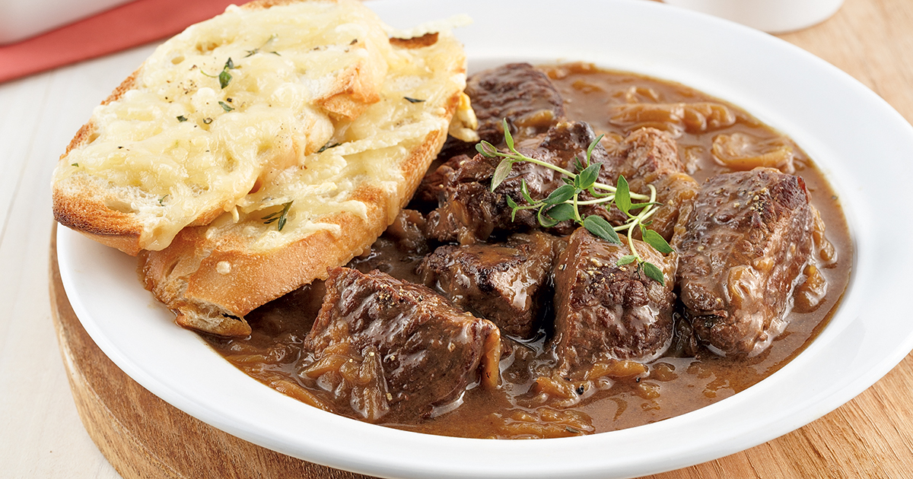

Retour à la page principale
Roti de pallette à l'oignon

Description
A congeler, plat mijoté, recette d’automne, recette d’hiver, sans noix, sans œufs, sans produits laitiers
Ingredients
- Un rôti de palette d’environ 2 kg
- Un sachet de soupe à l’oignon
Steps
- Mettre tous les ingrédients dans la mijoteuse.
- Faire cuire à low pendant 8 heures.